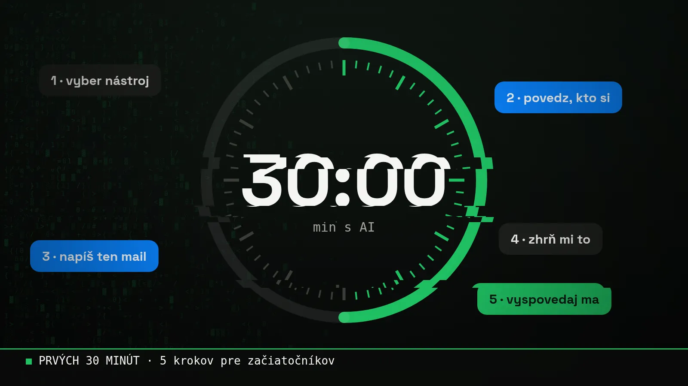

Blog ·
Prvých 30 minút s AI: 5 vecí, ktoré vyskúšaj ešte dnes
Nemusíš nič inštalovať ani vedieť programovať. Stačí pol hodiny, prehliadač a týchto päť krokov. Na konci budeš vedieť, kde ti AI ušetrí čas, a dostaneš aj checklist na stiahnutie.

Väčšina ľudí, ktorí mi napíšu, má rovnaký problém. Nie že by sa AI báli. Len nevedia, kde začať. Tak tu je moja odpoveď: daj si 30 minút, kávu a choď krok po kroku.
1. Vyber si jeden nástroj (2 minúty)
ChatGPT, Claude alebo Gemini. Všetky majú bezplatnú verziu a na začiatok je jedno, ktorý zvolíš. Dôležité je vybrať jeden a nepreskakovať medzi nimi. Ja najviac používam Claude.
2. Povedz mu, kto si (5 minút)
Najväčšia chyba začiatočníkov: píšu AI ako do Googlu. Krátko a bez kontextu. Skús namiesto toho toto:
„Volám sa Jana, mám malú kaviareň v Bratislave so 4 zamestnancami. Píšem ti, lebo chcem ušetriť čas na papierovačkách. Odpovedaj mi stručne a po slovensky.“
Uvidíš, aký rozdiel to spraví. AI ti odrazu odpovedá ako niekto, kto pozná tvoju situáciu.
Ďalšie takéto zadania, slovník pojmov a plán na celý týždeň nájdeš v mojej príručke:

Na stiahnutie · zadarmo
AI príručka14 pojmov po ľudsky, 10 hotových promptov a ťahák na 7 dní. 17 strán.
Stiahnuť PDF3. Napíš s ním mail, ktorý odkladáš (8 minút)
Každý má jeden. Ospravedlnenie zákazníkovi, pripomienka faktúry, ponuka. Napíš AI, komu a čo chceš povedať, a nechaj si dať tri verzie: formálnu, priateľskú a úplne krátku. Vyber jednu, uprav si ju po svojom a pošli. Hotovo, jedna vec z hlavy.
4. Nechaj si niečo zhrnúť (5 minút)
Dlhý článok, návod, zápis z porady. Vlož ho a napíš: „Zhrň mi to do 5 bodov a povedz, čo z toho mám urobiť ja.“
Ale pozor: nevkladaj nič citlivé. Žiadne zmluvy, osobné údaje klientov ani heslá. Prečo, to som rozpísal v článku Čo AI nikdy nedávaj, a mám k tomu aj pravidlá na vytlačenie:

Na stiahnutie · zadarmo
Bezpečne s AI: 10 pravidiel pre tímČo nikdy nevkladať a čo vždy overiť. Jedna strana.
Stiahnuť PDF5. Nechaj sa vyspovedať (10 minút)
Toto je môj obľúbený krok. Otoč to a nech sa pýta AI teba:
„Opýtaj sa ma postupne 5 otázok o mojej práci. Potom mi navrhni 3 veci, ktoré by som si mohol s AI zjednodušiť, od najľahšej.“
Odpovedaj úprimne. Na konci budeš mať zoznam vecí šitý na mieru. A ak chceš ísť ešte hlbšie, vytlač si môj checklist a prejdi si celú firmu:

Na stiahnutie · zadarmo
Checklist: čo vo firme zautomatizovaťZaškrtni, čo robíte ručne, dopíš hodiny a zistíš, kde začať a koľko vás to stojí mesačne.
Stiahnuť PDFMôj pohľad
Takto som začínal aj ja. Najprv maily a zhrnutia, potom tabuľky a nakoniec celá appka na moju robotu. Nikto nezačína tým, že si postaví systém. Začína sa jedným mailom, ktorý si odkladal.
Ak sa po tých 30 minútach zasekneš alebo chceš ísť ďalej, sadneme si spolu na 3 hodiny a nastavíme AI rovno na tvoje veci.
Chceš si niečo také vyskúšať sám? Na 3-hodinovej session ťa to naučím na tvojich vlastných veciach.
15 min hovor zadarmo